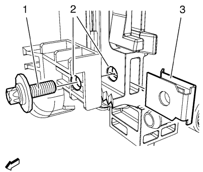

Cruze
Reparación del soporte del radiador y del refrigerador de aire de carga
Desmonte el radiador. Consultar
Sustitución del radiador
:
1.6L LXT
→
1.6L LDE, LXT, LXV y 1.8L 2H0
→
2.0L Diésel LLW
.
Desmonte el intercooler. Consultar
Sustitución del refrigerador de aire de carga
.

Perfore un orificio en el soporte del refrigerador del aire de carga y en el soporte del radiador (2) con una broca de
7 mm (0,28 pulg.)
.
Monte el clip en J (3) en el radiador.
Monte el radiador. Consultar
Sustitución del radiador
:
1.6L LXT
→
1.6L LDE, LXT, LXV y 1.8L 2H0
→
2.0L Diésel LLW
.
Monte el refrigerador de aire de carga en el radiador. Consultar
Sustitución del refrigerador de aire de carga
.
Atención:
Consulte
Precaución con las fijaciones
en la sección Prólogo
Monte el tornillo de reparación (1) con un compuesto fijador y apriételo a
5 N·m (45 lib. pulg.)
.
© Copyright Chevrolet Europe. All rights reserved